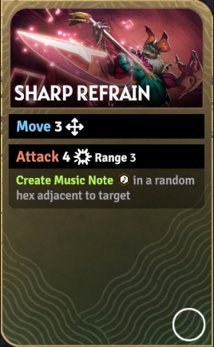
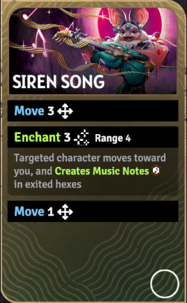
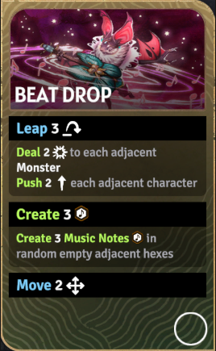
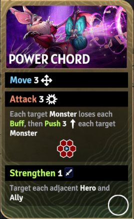
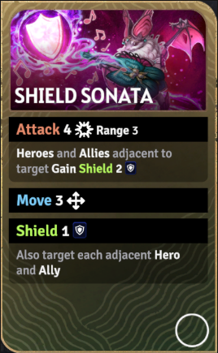
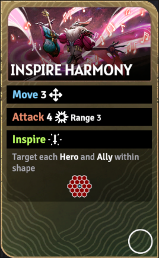
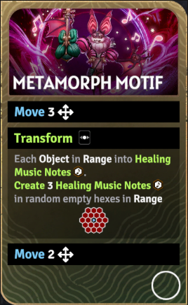
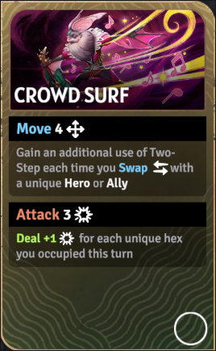
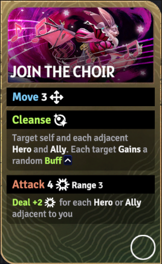
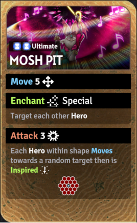

吟游诗人（Bard）
定位：辅助、机动协同、团队增益。她依赖换位、音符和即时增益为全队制造更多行动价值。
辅助换位联动音符团队增益

被动技能
双步
吟游诗人通过与友军换位来获得额外价值。她的被动让换位不只是位移工具，而是帮助队友重构站位、连动技能和提升回合效率的节奏核心。
专属机制
吟游诗人的核心不是单点击杀，而是靠换位、魅惑、激励和地面音符让全队“多走一步、多打一轮、多蹭一次增益”。她极其依赖团队协同，因此上手难度很高。
技能清单与详细描述

技能卡牌图锐音回响（Sharp Refrain）
技能消耗：无
移动 3。
攻击 4（射程 3）。
在目标附近随机生成一个音符。

技能卡牌图海妖之歌（Siren Song）
技能消耗：无
移动 3。
魅惑 3（射程 4）。
让目标向你移动。
在目标离开的格子里生成音符。
再移动 1。

技能卡牌图节拍坠落（Beat Drop）
技能消耗：无
跳跃 3。
对所有相邻怪物各造成 2 点伤害。
把每个相邻角色推荐?2。
随机在相邻空格创建 3 个音符。
最后移动 2。

技能卡牌图强音和弦（Power Chord）
技能消耗：无
移动 3。
攻击 3（所有相邻格范围效果）。
每个目标怪物失去全部增益。
每个目标怪物被推荐?3。
你和每个相邻英雄 / 友军获得力量 1。

技能卡牌图护盾奏鸣曲（Shield Sonata）
技能消耗：无
攻击 4（射程 3）。
目标周围的英雄 / 友军获得护盾 2。
再移动 3。
你和相邻英雄 / 友军获得护盾 1。

技能卡牌图激励协奏（Inspire Harmony）
技能消耗：无
移动 3。
攻击 4（射程 3）。
射程 2 格内范围中的每个英雄 / 友军施加激励。
被激励的目标会对相邻物件或怪物造成 3 点伤害。

技能卡牌图变奏主题（Metamorph Motif）
技能消耗：无
移动 3。
射程 2 格内每个物件变成治疗音符。
在范围内随机空格额外创建 3 个治疗音符。
然后移动 2。

技能卡牌图人潮冲浪（Crowd Surf）
技能消耗：无
移动 4。
每与一个新的英雄 / 友军交换时，额外增加一次双步使用机会。
然后攻击 3。
按本回合踏过的不同格子数量追加伤害。

技能卡牌图加入合唱（Join the Choir）
技能消耗：无
移动 3。
净化自己和相邻的每个英雄 / 友军。
让每个目标获得一个随机增益。
然后攻击 4（射程 3）。
若你相邻有更多英雄 / 友军，则伤害再提高。

技能卡牌图终极技·躁动深坑（Mosh Pit）
技能消耗：无
移动 5 / 6 / 7。
对所有其他英雄执行无限距离的魅惑。
再进行攻击 3 / 4 / 5（3 格内范围效果）。
使范围内每个英雄朝随机目标移动后被激励。
来源：?a href="https://sunderfolk.siteswiki.org/heroes/bard">吟游诗人页面（Bard）。
推荐技能组
控场扰阵方向
推荐理由：先把目标魅惑进场，再用节拍坠落打乱周围站位，最后以强音和弦补范围打击和团队增益，非常适合开场重构怪群位置。
团队保护方向
推荐理由：这一组偏团队保底，先发护盾稳住血线，再让队友立刻参与输出，最后用净化和随机增益抬高全队持续作战能力。
节奏爆发方向
推荐理由：人潮冲浪帮助 Bard 先完成换位和接近，锐音回响补音符与先手伤害，再以节拍坠落延续扰阵和区域压力，适合中后期的节奏爆发。